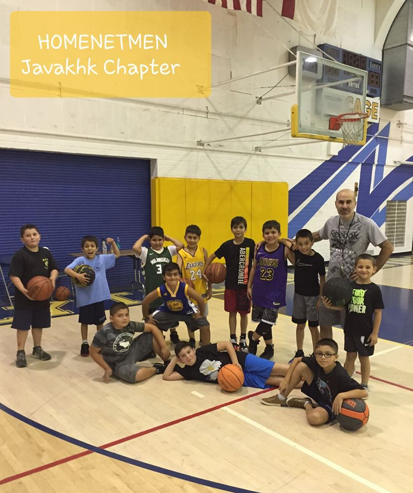

My Hobbies
One of the most common everyday sports that people can play at any park, gym, or school court is basketball. Basketball is one of the most strenuous cardiovascular activities out there, and it ranks as high as running, jogging, swimming, or tennis when it comes to calories burned. Basketball involves constant movement, jumping, running, and quickly moving your feet. Playing basketball is one of the best and most enjoyable things you can do to stay in shape.
This is a partial list of hobbies. A hobby is an activity, interest, or pastime that is undertaken for pleasure or relaxation, done during one's own time. This list includes only recognized hobbies that have been the subject of published discussions or that have organized membership associations.

Kids Training
- Traning with my friends was a pleasure all the time.
- Currently i'm coaching these kids to the next tournament.
List of other hobbies that i'm intrested in :
- Scouting
- Fishing
- Fish keeping
You can join us if you like
Click the link Homenetmen Javakhk.
The website is one of my works.